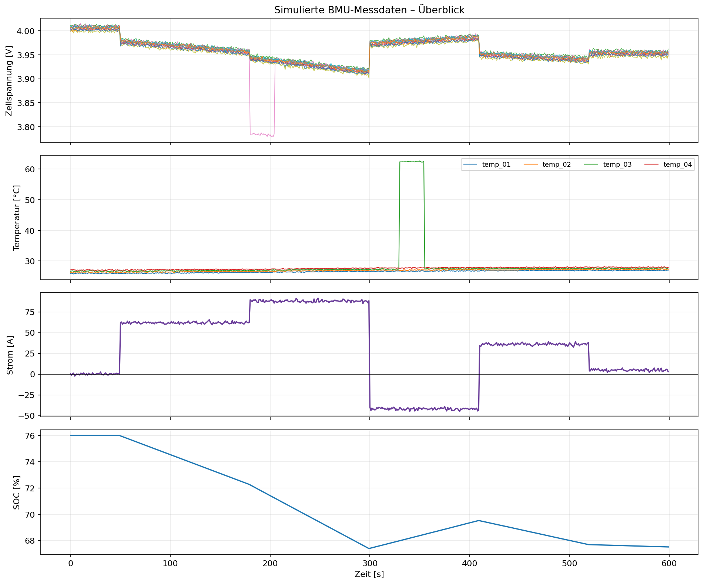

Demonstrator: vollständig simulierte Daten und generische Lern-Grenzwerte. Keine BMW-Daten und keine freigegebene technische Spezifikation.

| Startzeit | Regel | Stufe | Komponente | Wert | Grenze | Beschreibung |
|---|---|---|---|---|---|---|
| 2026-09-15 08:03:00 | CELL_IMBALANCE | WARNING | cell_voltage_group | 0.169 | Delta <= 0.080 V | Spannungsdifferenz zwischen höchster und niedrigster Zelle auffällig |
| 2026-09-15 08:05:30 | OVER_TEMPERATURE | CRITICAL | temp_03_c | 62.66 | <= 55.0 °C | Temperatur über generischem Lern-Grenzwert |
| 2026-09-15 08:05:30 | TEMPERATURE_SPREAD | WARNING | temperature_sensor_group | 36.03 | Delta <= 15.0 °C | Temperaturdifferenz zwischen Sensoren auffällig |
| 2026-09-15 08:07:14 | FROZEN_SENSOR | WARNING | temp_02_c | 27.08 | keine konstante Folge über 15 Werte | Mögliches eingefrorenes Sensorsignal erkannt |
| 2026-09-15 08:08:20 | MISSING_VALUE | WARNING | cell_10_voltage_v | NaN | Wert vorhanden | Fehlender oder nicht interpretierbarer Messwert |
| 2026-09-15 08:09:00 | PACK_VOLTAGE_MISMATCH | WARNING | pack_voltage_v | 2.066 | Abweichung <= 0.80 V | Packspannung passt nicht zur Summe der Zellspannungen |
Ein Befund markiert eine Auffälligkeit. Die endgültige technische Ursache muss durch qualifiziertes Fachpersonal geprüft werden.